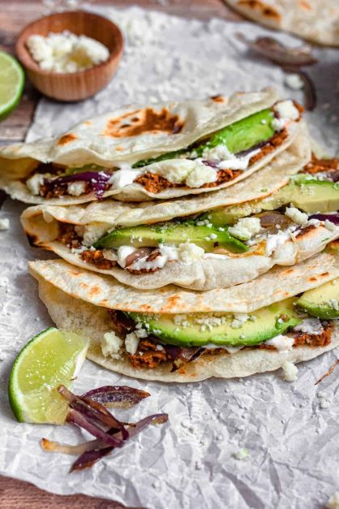

Honduran Baleadas

Description
In El Salvador there are pupusas. In Mexico there are tacos. In Honduras there are Baleadas. The simple version consists of a thick flour – though sometimes corn – tortilla that has been put on a charcoal grill. It's slathered in refried black beans and a bit of white farmers cheese then folded over like an American-style soft taco.
Ingredients
- 2 cups all-purpose flour
- 1 cup water
- ½ cup vegetable oil
- 1 egg
- ½ teaspoon salt
- 2 cups refried beans, warmed
- 1 avocado, sliced
- ½ cup crumbled queso fresco (fresh white cheese)
- ¼ cup crema fresca (fresh cream)
Steps
- Mix flour, water, vegetable oil, egg, and salt in a large bowl; knead until dough is smooth and no longer sticky.
- Form the dough into 8 golf ball-sized balls. Cover and let rest, about 20 minutes.
- Stretch each ball of dough into a thick tortilla.
- Heat a large skillet over medium-high heat. Cook each tortilla until browned and lightly puffed, about 1 minute per side.
- Layer refried beans, avocado, and queso fresco over tortillas. Drizzle crema on top; fold tortillas in half over filling.